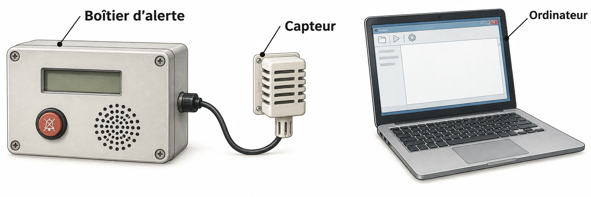

OBSERVER · EXPÉRIMENTER · EXPLIQUER
Une alerte fiable
Explore le comportement d’une alerte, en séparant voyant et son.

✎ Garde ta feuille à côté de toi.Ouvre ta fiche et suis les numéros Q1 à Q8. Note tes résultats sur papier. Une séance : environ 1 h 20.
Q5 · Suivre une liste et un compteur
Liste : 20, 29, 31, 28, 27 °C. Le compteur démarre à 0. Avant chaque clic, décide si la valeur est strictement supérieure à 28.
Sur ta feuille : valeur lue → condition vraie/fausse → compteur. Puis écris la boucle.
Q6–Q8 · Modifier puis tester dans Scratch
- Q6 : sur le banc, reviens à 20 °C et 0 s après une alerte. Relance la lecture et observe les deux sorties.
- Q7 : crée T, dureePorte, muet, maintenance, alerte et son. Pour les booléens, utilise 0 (faux) et 1 (vrai).
- Dans quand drapeau vert cliqué → répéter indéfiniment, utilise si… alors… sinon pour mettre alerte à 1 ou 0. Construis la condition avec les blocs > et ou.
- Calcule ensuite son : il doit être actif seulement si l’alerte existe et si ni muet ni maintenance ne l’interdisent. Utilise et et non.
- Q8 : prévois les sorties avant chaque test. Teste maintenance vraie puis fausse, avec les autres entrées identiques. Note les deux résultats.
Aide pour la boucle de Q5
Crée la liste temperatures et compteur. Mets compteur à 0, puis parcours tous les éléments. Ajoute 1 seulement si la valeur lue > 28. Le compteur ne doit pas être remis à zéro entre deux éléments.
Avant de terminer
Vérifie tes numéros de réponses, tes unités et les observations qui justifient tes conclusions.